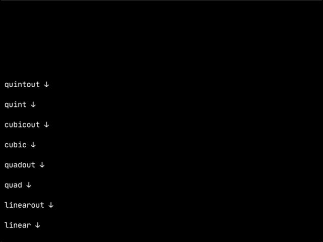

A simple python tweening library, for making little animations.
About
It basically just changes a variable in a class every time the
update() method is called. It lets you create pretty
complex animations using the animation dictionary system.
Usage
- copy
leven.pyinto your working folder. - import it in your main python file.
- create a new tweener
- "start" the tweener
- update the tweener every tick/frame/second/whatever
Example:
import leven
class AnyClass:
def __init__(self):
self.valueToAdjust = 0
self.animation = leven.Tweener({ # creates a new tweener
"start":{ # the animation name
"v":["valueToAdjust"], # the (v)aules to adjust
"sv":[0], # the (s)tart (v)alues
"ev":[100], # the (e)nd (v)alues
"a":["linear"], # the "(a)nimation" types
"t": 60, # the "(t)ime" to run it for
"->":"end" # the next animation
}
}, self) # !! very important
self.animation.start() # "starts" the animation
def update(self):
self.animation.update() # goes through all of the animations
...
The Animation Dictionary System
all animations/tweens leven uses are created through an "animation dictionary". Which is just a big dictionary that contains the animation settings. The basic form of these dictionaries is as follows:
{
"animation name":{
"v": ["values", "to", "adjust"],
"sv": [0,0,0],
"ev": [500,10,400],
"a": ["linear","linear","linear"],
"t": 60,
"->": "end"
}
}
All animation dictionaries need to have a "start" animation, and a "->" value that is "end". This means that you can create complex animations that have multiple steps relatively easily.
The animation types
Leven has a bunch of animation types built in, and adding your own is very easy.
-
linear / linearout: a simple linear animation from 0% to 100%. quad / quadout: a quadratic animation.cuibc / cubicout: a cubic animation.quint / quintout: a quintic animation.

Note: all animations have a "out" variant, this is where it goes from the end value ("ev") to the start value ("sv"), this is usefull when you want to go from a large number to a small number, as python range does not support going in reverse very easily. So a simple work around is this "out" system.
Adding your own animation type
steps:
-
make a function that takes a number as an argument, and returns
another number:
def coolNewAnimationType(x): return x + x*x -
add the animation to the animation types dictionary:
leven.f["coole"] = cooleNewAnimationType -
great! you can now use the animation in your animation dictionaries:
"start":{ "v": ["valueToAdjust"], "sv": [0], "ev": [500], "a": ["coole"], "t": 60, "->": "end" }
generateArray helper function
a function that generates a tweened array/list of values
tweenedList = leven.generateArray(0, 100, elemNo=10, function="linear")
# returns [0,10,20,30,40,50,60,70,80,90,100]
Show your support
Give a ⭐️ if this project helped you!